Es muy difícil para mí no ver a Córdoba en Cali y a Cali en Córdoba.
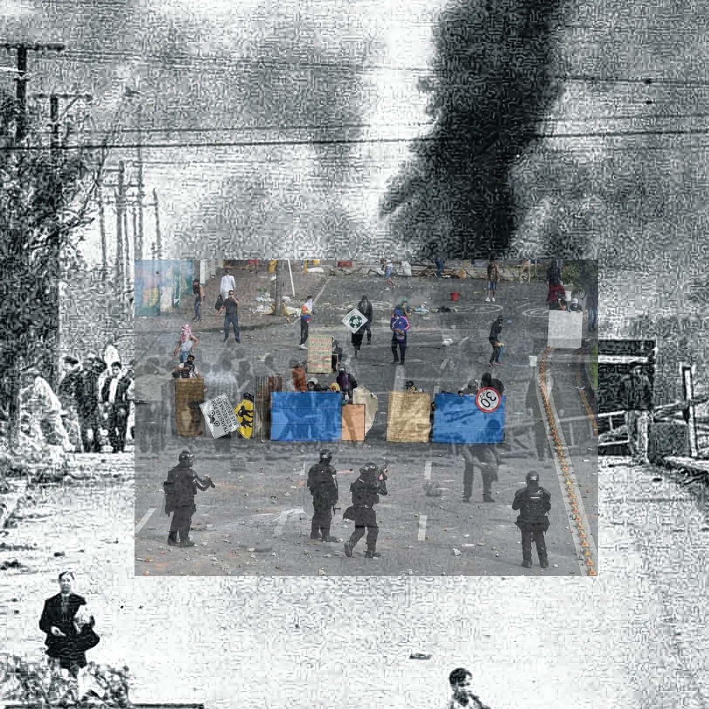
la córdoba/cali colonial y católica - cuna del cordobazo/estallido.... ejemplo internacional de resistencia urbana.
En el medio de un proceso electoral en donde se reaviva cínicamente una de las experiencias más traumáticas de la historia argentina, escuchar las experiencias de aquelles que lo vivieron hace un año y medio.
ya no sentirlo con 40 años de distancia - sentirlo cerca
y buscar en internet las cifras oficiales - después hacer cuentas rápidas... cuántas personas conocí en Cali? De ellas, c/u al menos conoce una persona asesinada.
que se me arme un nudo en la garganta.
Comer pizza con Natalia y chiques de tres universidades distintas, intentando convencerles que se puede juzgar a genocidas y al terrorismo de estado - de que existe la justicia. Ver en sus caras la sorpresa ante todos los procesos judiciales vividos en Argentina. No les contaron nada de esto, así como acá no se difundió el estallido de Cali.
Deep live coding
Venía trabajando en mi colaboratorio de live coding con toda la furia - tres días de live coding y de ejercicios de escucha. Ese fue un experimento para mí - tomarme en serio la primera parte de mi definición de live coding.
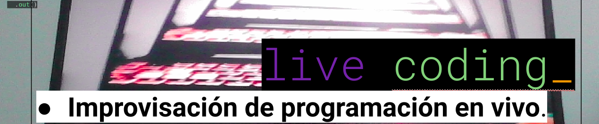
Una experiencia que me marcó mucho fue el taller intensivo de improvisación sonora "El arte de la escucha" de Diego Kohn, dictados en mayo de 2023 en la Facultad de Música, UNC. Gracias a que Franco Pellini estaba en la organización yo pude asistir. El cupo era muy chico y la pregunta de la sala era, qué hacia una persona de visuales en un taller de improvisación sonora? Con Franco en 2022 hicimos una performance AV impactante en el aniversario de Sonido Atmosférico y, conociéndome, intercedió por mí, en un acto de confianza absoluta. Gracias Franco.
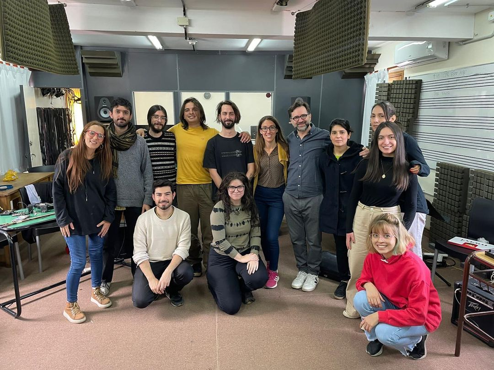
Ese taller me hizo replantearme muchísimas cosas - a partir de Mayo hasta hoy vengo explorando la implementación de esas enseñanzas en lo visual. De hecho, tuvieron que pasar esas cosas para atreverme a hacer un taller en donde formalice esas experiencias.
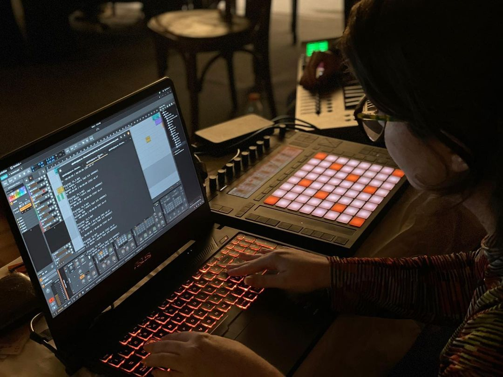
El primer intento lo hice en un formato menos intenso para Experimentalia 14 (también dirigido por Andrés Asia aka NONOISE79, como fue aquel Sonido Atmosférico - Gracias Andrés!). Vi un muy buen recibimiento en Córdoba, así que redoblé la apuesta para Colombia - me propuse: usemos las técnicas de les músiques para componer/interpretar en vivo en las visuales, enseñemos qué es el sonido, enseñemos audiorreactividad, enseñemos sinestesia!
Lo que más me cuesta enseñarles a las personas es que para hacer visuales tienen que escuchar. Después programar (si hace falta y si se tiene algo que decir).
El grupo que asistió a mi colab respondió muy bien a estos ejercicios - de hecho descubrieron cosas de sí mismes que compartieron en rondas reflexivas que me voy a llevar por siempre
Alguien descubriendo que si se concentraba en escuchar, no podía distinguir entre lo que yo le sugería con mi voz y lo que realmente pasaba. Lo que uno se sugestiona escuchar (la realidad interna) y la supuesta realidad externa.
"¿Hay un auto afuera en la calle o solo escucho un auto porque me dijiste que sonaba?"
Alguien descubriendo que no estaba en situación para estar presente - que la urgencia de sus responsabilidades estaba afectando a su día a día.
"Si me estás pidiendo que escuche por 2 minutos, ¿por qué no puedo?"
Alguien explorando la capacidad auto-inmersiva de la consciencia.
"Me imagino a mi mente saliendo de mí mismo - puedo escuchar afuera de la sala porque de alguna forma también estoy allí."
También mucha emoción por el live coding. La verdad es que el live coding se hace amar, es pasión de multitudes.
Miel: loopera textovisual
Venía trabajando en mi colaboratorio de live coding con toda la furia - tres días de live coding y de ejercicios de escucha. Ese fue un experimento para mí - tomarme en serio la primera parte de mi definición de live coding.
En paralelo
Por medio de John entré en contacto con Javier Blanco. Gracias John. Javier me contó que estaba haciendo una obra llamada Miel de Purga. La Miel de Purga es un derivado de la caña de azucar que se usa -entre otras cosas- como laxante en ganado y que es un material visual que está entre la miel, la sangre y el petróleo.
En paralelo yo recordaba
Para ir del aeropuerto hasta Cali hay que pasar por hectáreas de caña de azúcar. El taxista que me llevó del aeropuerto hasta Cali me contó mucho de la historia de la caña de azucar y sus derivados.
No podía dejar de relacionarlo con Córdoba y la soja. Creo que me permitió tener una intuición bastante inmediata pero medio inexplicable de la relación entre la población caleña y la caña de azucar.
Obvio, vamos a colaborar. Say no more. O como dice Javier: "Vale".
La primera colaboración que pensamos fue visual: la primera fecha la tenemos en dos días - no hay problema, yo me dedico a improvisar.
- Contame qué te imaginás
- No sé
- Me imagino que esperás algo tirando a minimalista.
- Sí puede ser. Estamos con Mario grabando material audiovisual, tal vez podés hacer algo con eso?
- Si obvio - que me pase Mario las cosas.
Mario grabó entrevistas cortas a les performers, respondiendo una serie de preguntas sobre las vivencias personales de elles en el estallido de Cali - medio en formato de ping pong.
Mario además se tomó el trabajo de escucharlas y anotar las partes que le parecían más interesantes de cada una y transcribirlas. Las anotaciones de tiempo estaban un poco a ojo así que lo primero que hice fue
por cada video:
extraer las transcripciones automáticamente usando whisper.cpp
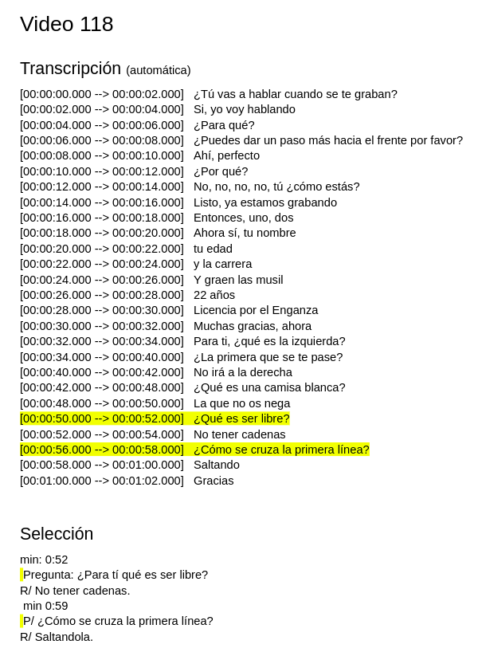
Si bien a whisper.cpp le cuesta mucho más las transcripciones automáticas del acento caleño que de los acentos que había probado antes, de esta forma podía complementar el trabajo de Mario para facilitarme la tarea que me esperaba.
cortar los pedazos encontrados en whisper
armar una carpeta de clips
armar una estructura de datos que asocie cada clip a la transcripción adecuada ie par (pregunta, respuesta)
Me imaginaba lo siguiente:
una loopera que me permitiera disparar rondas de video en simultaneo, en lugares random de la pantalla ("paralelo")
y que además me permitiera, si la rítmica me lo pidiera, disparar de a un video a la vez ("secuencial")
Hice dos implementaciones: una en js y otra en python. Las implementé en una noche y una mañana.
Me acuerdo me desperté a las 4am hiper manija - quería tenerlo para la fecha sí o sí.
Release notes
loopera de videos hecha con python y mpv inspirada en relatos del estallido Colombiano, contado por estudiantes de danzas de UniValle. En colaboración con el proyecto de Javier Blanco.
Esta loopera tiene dos modos: secuencial y overlap.
Puedo controlar con el teclado tiempo de espera entre una aparición de próxima camada de videos o video, y la cantidad de videos a mostrar de una sola vez en modo overlap.
En un uso final (en esta versión) puedo elegir que se vean solo los videos entrando y saliendo, ya que puedo mandar los videos a la pantalla final, no mostrando la interfaz con las letras. Sino tengo las transcripciones aparejadas a los clips con las preguntas y respuestas - por lo que podemos mostrar todo en lo mismo, o una cosa en cada pantalla.
Al día siguiente se usó la loopera (que llamé Miel) en un adelanto corto de los trabajos de colabs en medio del MASS Encuentro. Fue interesante esa primera experiencia. Por momentos me gustó el resultado, pero me pareció que "visualié" demasiado. Tomé nota: para la próxima (que era en una semana y la "definitiva" (incluso, la obra que cierra el MASS) ) tengo que hacer un paso atrás y escuchar/ver mucho más.
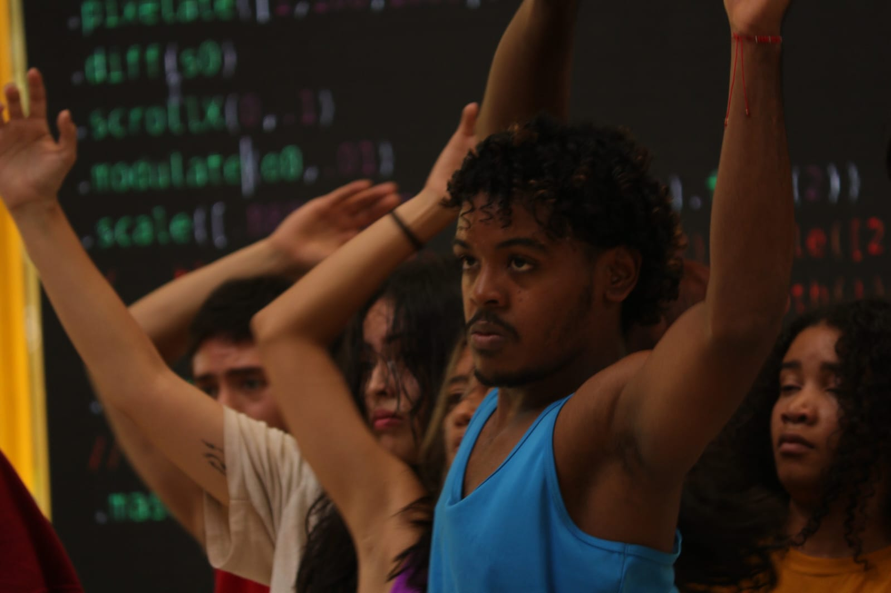
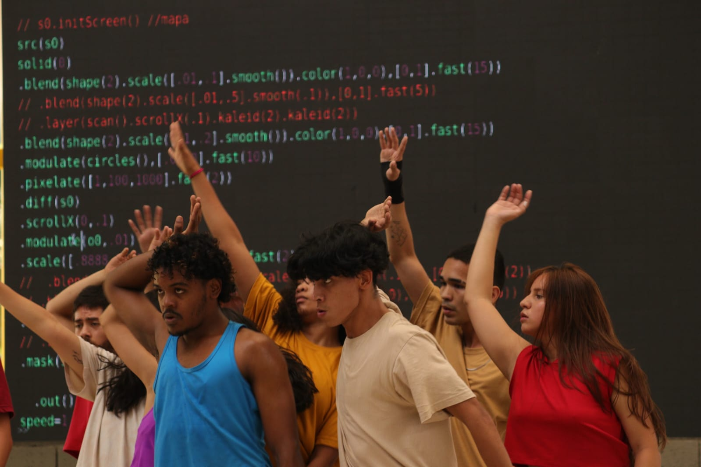
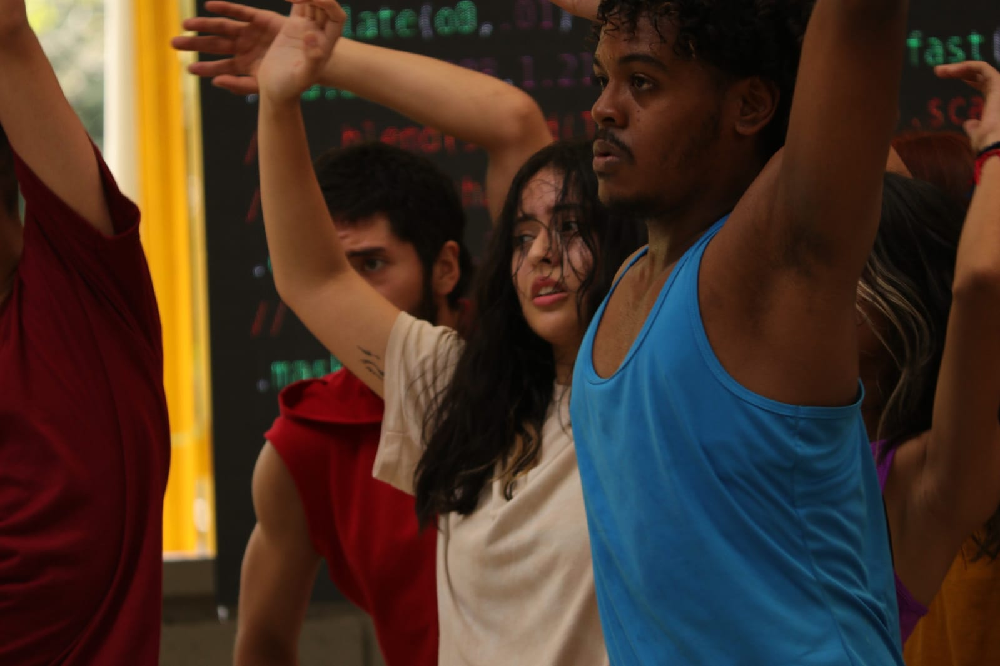
Viendo las fotos me parece interesante que lo que más me guste es el código sin efecto - sin ejecutar - código que es más texto que algo ejecutado, solo esperando y mostrando una pantalla en negro.
El código escrito pero silenciado
un().monton().de().código()
hush()
Paisaje Retrato Sonoro
Venía trabajando en mi colaboratorio de live coding con toda la furia - tres días de live coding y de ejercicios de escucha. Ese fue un experimento para mí - tomarme en serio la primera parte de mi definición de live coding.
En paralelo
Nunca dejé de grabar sonidos. Grabé radios en taxis, conversaciones en ubers, pruebas técnicas, noches sola, conciertos, bailes. Grabé ranas, cañas de azucar, el piano de sebastián, ensayos y voces.
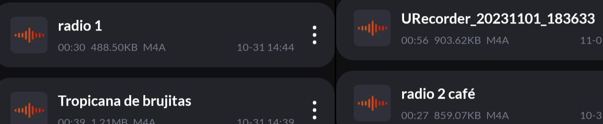
Con esto venía armando una composición digital a modo de Paisaje Sonoro de Cali.
Lo pueden escuchar aquí, como el WIP CRUDO que es:
Eventualmente esto implicó que cuando se necesitó sonido, yo ya tenía una base armada que significó escuchas y exploraciones previas con la mente en los sonidos de Cali.
Los procesos colaborativos implican unas idas y vueltas energéticas y uno no siempre está con ese nivel de fluidez. El grupo venía intentando confluir energías en procesos sonoros para la primera mitad de la performance, pero ese proceso que venía siendo se cayó y lo vi frente a mí - simplemente dije "yo puedo hacerlo" (porque es lo que sentía sinceramente).
Primero le mostré a Beatriz vcv rack , y los ruidos que venía haciendo con eso.
La verdad, armar un parche de vcv rack usable en vivo me lleva más de dos días. Y solo teníamos dos días para armar veinticinco minutos de sonoridad para la primera mitad de la obra Miel de Purga.
Luego le mostré Bitwig.
Lo único que sabía de la primera parte de la obra (que no iba a ver hasta que fuera el dia del estreno) es que Beatriz tenía un solo de voz.
Como no había ninguna otra cuestión sonora que le sirva como colchón empecé a tirar ideas sobre algo que le sirviera como un material con el cual dialogar.
Para que la performance sea más interesante para ella también - hablar con su propia voz, escuchar su voz deconstruida, hecha ruido, o un susurro, o un eco, o un canon.
Me dio la sensación que le gustó pero no tenía fe Beatriz. El día anterior ya habíamos tirado alguna idea de ese estilo - armando nuestras propias negociaciones sonoras - y había intentado conseguir un estudio de grabación de sonido pro, pero no había funcionado.
Le dije
Esto es muy fácil.
Le pedí que grabemos su voz con mi celular, y un par de sonidos más, así le mostraba en vivo todo lo que se puede hacer con Bitwig.
Que el sonido de fondo se puede sacar o transformar. Con un poco de maña. Es fácil.
Grabación de voz cruda:
Trabajo rápido con efectos a modo de prueba de concepto:
Sentí que entre las dos habíamos descubierto algo. Y que Beatriz empezaba a creer. Gracias Beatriz!
Hacer crecer incremental y orgánicamente el sonido
Al día siguiente nos juntamos bien temprano a empezar a armar una versión primera-final aceptable. En mi mente: un MVP - no lo dije en voz alta porque a veces la influencia que tiene en mi mente y procesos mi paso por la industria me da un poco de vértigo.
Teníamos el tiempo contado ya que de allí yo tenía que irme a dar una charla en la Universidad Javeriana.
Beatriz había grabado distintas versiones en su casa de lo que ella quería que fuese el sonido final de su performance sonora.
Javier venía desarrollando el guión de la obra en papelitos pegados - un sistema modular muy interesante a la vista : de hecho la primera vez que lo vi lo primero que le dije es que lo deje que le tenía que sacar una foto.
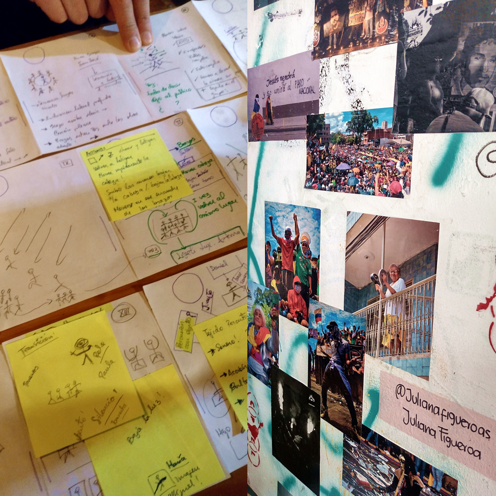
Eventualmente lo modular de ese sistema permitió construir un guión paralelo sonoro. Como una matriz hiperdimensional - un tensor.
Empezamos construyendo un guión paralelo en base de lo que habíamos probado el día anterior -
Me explicaba Beatriz:
me imagino
un canon que aparezca de a poco,
yo le dije: que se transforme en bruma
y beatriz me dijo
que sea intervenido por ruidos de caña de azúcar que funcionen como percusión. Una percusión primero abstracta, deformada pero que luego adquiera una cuestión rítmica más intensa.
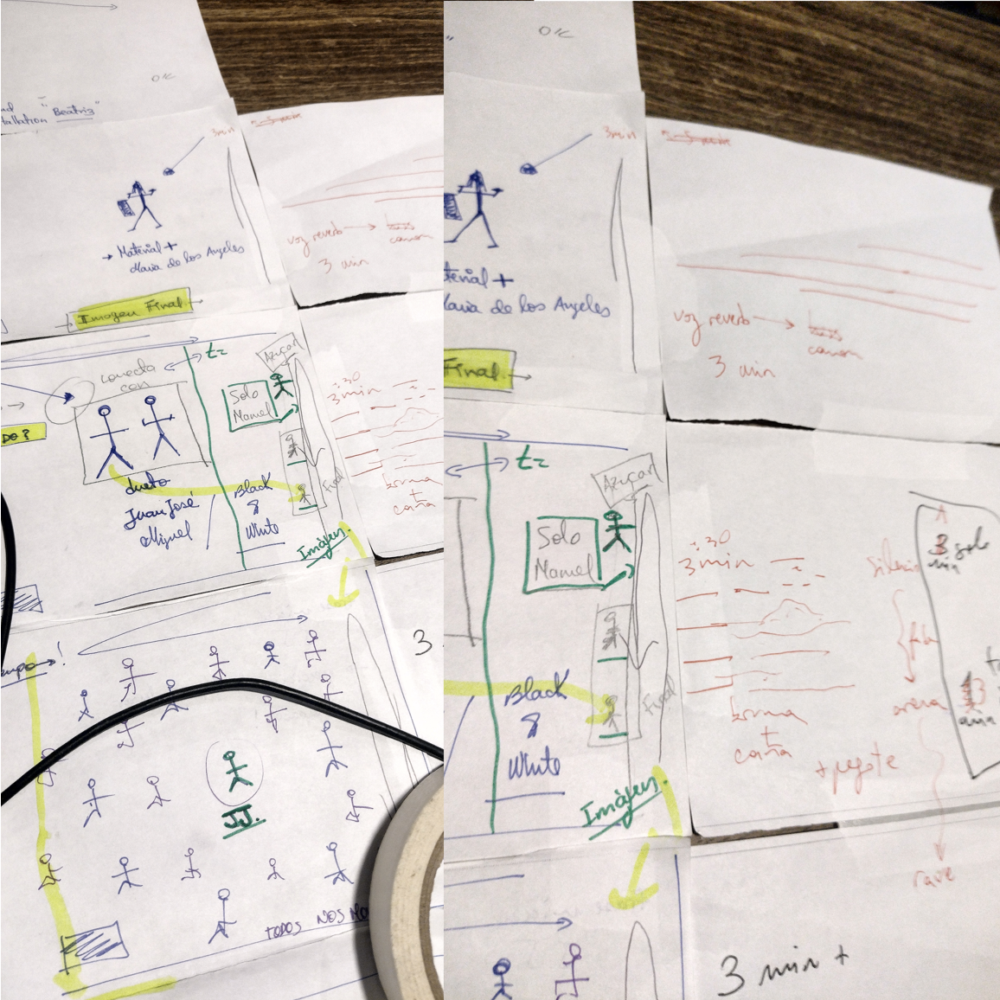
Dije Ajá. A ver. Lo dibujemos.
Entre Beatriz y Javier me iban dictando el tiempo que tenía que durar cada módulo, cuáles eran los giros emocionales necesarios para cada sección y qué transiciones eran necesarias - yo iba interpretando/componiendo/proponiendo - de adentro para afuera. El solo de Beatriz era el corazón-nucleo sonoro, y el resto de la obra creció para ambos costados.
Y en vivo
En paralelo
me gusta sentir el ruido soplándome en el oido.
Con mis auriculares se vuelve íntimo.
pero en vivo es distinto.
No sé si el grupo sabía, pero fue mi primera obra sonorizada sonorizante en este sentido.
Se sintió increíble
Ver conjugados los sonidos con las acciones
ver interpretaciones corporales en vivo de lo sonoro - contrapuntos - diálogos - contradicciones
como lo que yo veo cuando live codeo, y tengo que decidir desde el presente
¿qué opino de lo que escucho, y cómo me modifica escucharlo?
Gracias Javier, Beatriz, Mario y les intérpretes por la apertura y el espíritu colaborativo que no se encuentra en cualquier lado. Gracias al equipo del MASS Encuentro por facilitar todo esto y ser cuna de estos encuentros. Gracias a Presente Continuo por el cual quedé seleccionada para el MASS.
versión final usada en el cierre de MASS Encuentro
Miel de Purga. Un montaje coreográfico dirigido por @javier_blanco_sur , residente internacional de la @lic.danzaunivalle , apoyado por @mincultura y @massencuentro. Se presentó en dos espacios de la Escuela de Artes integradas de @univallecol el pasado viernes 10 de noviembre.
Estas palabras recogen un poco las ideas que me evocaron los cuadros del montaje. Pude leer las contradicciones cotidianas, la de la opulencia y la de las carencias de ls calle; el abuso de la imposición de una verdad frente a lo diverso de la existencia; el moncultivo machista que parece importarle poco la violencia callejera de la supervivencia; y la rumba que seduce con su melosería, con las adicciones que nos ayudan a soportar los vacíos existenciales.
Inevitable no leer la alusión al contexto feudal vallecaucano, que cuida más la agroindustria asesina de la caña de azucar, que las posibilidades de supervivencia de las nuevas generaciones.
Ante el estallido social la rumba, ante las pandemias bulímicas del dulce, los bultos de miel, sin importar las purgas representadas en cuerpos desechados de jóvenes rebeldes que se niegan a un sistema que los usa solo como consumidores.
Si te rebelas, siempre terminarás untado por la seducción del olor dulce, de la carne y lo "glotonería", que te hace olvidar de las contradicciones sociales.
Después del estallido social y de la pandemia, pareciera aparecer una nueva cultura, que sigue legitimando el consumo, la adicción al placer, a los tiktok y sus parientes, a la imágenes bellas de la IA, al cuerpo que nos ayudan a mientir los filtros, al sálvese quien pueda, al roba roba de los señores feudales, a la cultura banal que no nos deja levantar la mirada hacia horizontes emancipatorios de otras nuevas utopías que protejan la vida.
Todo por una sociedad que purga cualquier intento de transfirmación con narices empolvadas, con el dulce encanto de la melcocha, asi sea ésta la motosierra de la adicción. Al final todos terminamos untados, todos terminamos siendo productores y consumidores de los bultos de "Miel de Purga".
Créditos completos de Miel de Purga
Dirección, concepto y coreografía: Javier Blanco @javier_blanco_sur
Asitente de dirección
Mario Ortiz (@m0rt1z.0)
Dirección Sonora
Beatriz Sterling (@sterlingbeatriz), Karen Palacio (@kardaver), Javier Blanco
Video - live coding y visuales
Karen Palacio (@kardaver)
Bailarines - creadores
Karla Jarid (@karlajaridre)
Jhangelyz Lópe (@jeijei_21)
Juan José Guzman (@zambooo)
Miguel Ángel Naspucil (@i_am_naspu)
Maria Fajardo
Daniel Pino (@daniel.pino.b)
Mabel Reina Salazar (@mabelreina_)
Kevin Ríos Mejía (@k.mejia15)
María de los Ángeles López
Paula de la Cruz
María José López Sarmiento
(@majosobretablas)
Manuel Alejandro Rodríguez López
(@manuel.lopez5)
Producción artística
Mario Ortiz, Javier Blanco
Producción Ejecutiva
MASS. Encuentro Internacional en Artes y Culturas Digitales. Facultad de Artes Integradas, Univalle - Colombia.
Proyecto desarrollado gracias a las Residencias Internacionales en danza - Programa Estímulos 2023 del Ministerio de Cultura Colombia.
@mincultura, @danzaminculturasartesysaberes
Con el apoyo de:
Licenciatura en Danza de la Universidad del Valle. @lic.danzaunivalle
Festival MASS. @massencuentro
Colaboratorio Material, Cuerpo y Acción, creación coreográfica interdisciplinar. The Edge - Multidisciplinary art company y Sur creación Escénica.